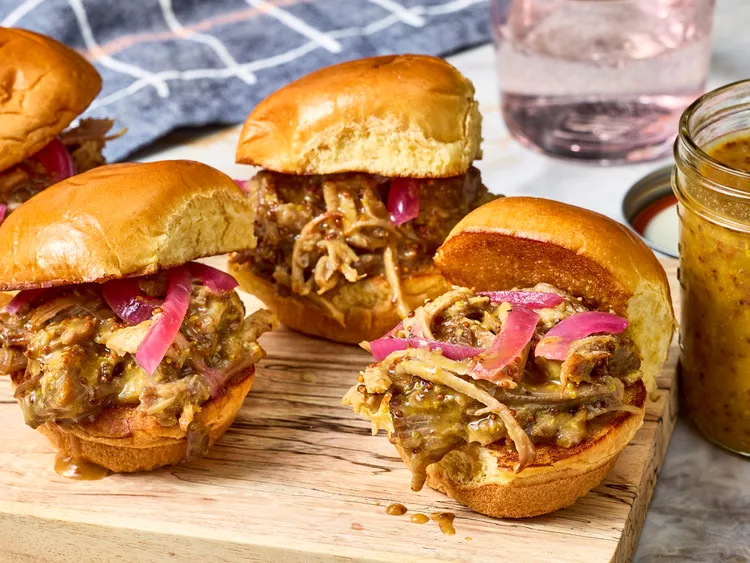

Slow Cooker Honey Mustard Pulled Pork

Description
This slow cooker honey mustard pulled pork is so punchy and sweet, and the glossy sauce clings nicely to the pork. Serve on slider buns.
Ingredients
- 1 tablespook kosher salt
- 2 teaspoons granulated garlic
- 1 1/2 teaspoons onion powder
- 1 1/2 teaspoons dry mustard
- 1 teaspoon freshly ground black pepper
- 1 (3 1/2 pound) pork shoulder,trimmed and cut into 3 pieces
- 2/3 cup honey
- 1/2 cup Dijon mustard
- 1/3 cup whole grain mustard
- 2 tablespoons Worcestershire sauce
- 1 tablespoon apple cider vinegar
- 12 slider buns, or as needed
- 3/4 cup pickled red onions, or as needed
Steps
- Gather all ingredients
- Stir together salt, granulated garlic, onion powder, dry mustard, and black pepper in a small bowl. Rub spice mixture evenly over pork.
- Place pork in an 8-quart slow cooker. Stir honey, Dijon mustard, whole grain mustard, Worcestershire, and apple cider vinegar in a bowl. Pour 1 cup Dijon mixture over pork; cover and refrigerate remaining 1/2 cup. Cover the slow cooker, and cook until fork tender, flipping pork halfway through cooking, 5 to 6 hours on High or 8 to 10 hours on Low.
- Transfer pork to a cutting board, reserve 1/4 cup cooking liquid in the slow cooker; discard remaining cooking liquid. Whisk reserved Dijon mixture into reserved cooking liquid. Shred pork with 2 forks and stir into sauce.
- Serve on slider buns with pickled red onion.
Home